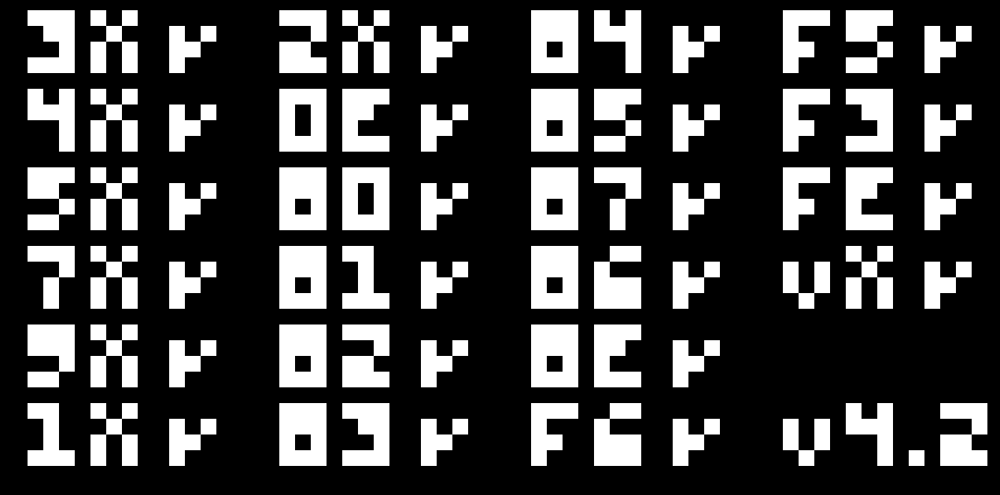

Its inevitable if someone is getting into emulator development, the first obstacle is chip8. Emulating is a techinque of running software desing for a specific hardware to run on the host computer so emulating is a software that emualtes physical hardware.
But chip8 is not really a piece of hardware hardware that we are emulating but it's an intrepreter, so it more like chip8 intrepreter, but i will call it an emulator.
NOTE: This is not a step by step tutorial for creating a chip8 emulator but a techincal refrence of how mine works internally.

c: base code.
gcc: compiler for c.
make: build system.
SDL2: windowing and input.
#define MEMORY 4096
#define REGISTER 16
#define STACK 16
#define DISPLAY_WIDTH 64
#define DISPLAY_HEIGHT 32
#define NUM_PAD 16
typedef struct {
uint8_t memory[MEMORY]; // 4kb memory
uint8_t V[16]; // 16 8-bit register VF=carry flag
uint16_t I; // Index register
uint16_t pc; // Program counter address of current inst
uint16_t stack[STACK]; // stack call subroutines/functions and return from them
uint8_t sp; // stack pointer
uint8_t delay_timer; // delay timer
uint8_t sound_timer; // sound timer
uint8_t display[DISPLAY_WIDTH*DISPLAY_HEIGHT]; // 64*32 pixel display
bool keypad[NUM_PAD]; // keypad state [0-F]
bool draw_flag; // redraw flag
} chip8_t;
uint16_t opcode = (memory[pc] << 8) | memory[pc+1]; uint8_t first_nibble = (opcode & 0xF000) >> 12; // 1111 0000 0000 0000 uint8_t x = (opcode & 0x0F00) >> 8; // 0000 1111 0000 0000 uint8_t y = (opcode & 0x00F0) >> 4; // 0000 0000 1111 0000 uint8_t n = opcode & 0x000F; // 0000 0000 0000 1111 uint8_t kk = opcode & 0x00FF; // 0000 0000 1111 1111 uint16_t nnn = opcode & 0x0FFF; // 0000 1111 1111 1111 // opcode // 1111 1111 1111 1111
since a single instruction is (16bits/2bytes) long we can break down it down to bits and bytes.
first_nibble: the highest 4 bits to identify the instruction class (Type)
x: second nibble, usually used to look up register Vx
y: third nibble, usually used to look up register Vy
n: lowest 4 bits, typically used for a 4-bit immediate value (nibble)
kk: lowest 8 bits, used for an 8-bit immediate constant (byte)
nnn: lowest 12 bits, used for memory addresses (lookup/jump targets)
switch (first_nibble) {
case 0x0: // 0nnn / 00E0 / 00EE - System / Clear screen / Return from subroutine
case 0x1: // 1nnn - JP addr - Jump to address nnn
case 0x2: // 2nnn - CALL addr - Call subroutine at nnn
case 0x3: // 3xkk - SE Vx, byte - Skip next instruction if Vx == kk
case 0x4: // 4xkk - SNE Vx, byte - Skip next instruction if Vx != kk
case 0x5: // 5xy0 - SE Vx, Vy - Skip next instruction if Vx == Vy
case 0x6: // 6xkk - LD Vx, byte - Set Vx = kk
case 0x7: // 7xkk - ADD Vx, byte - Set Vx = Vx + kk
case 0x8: // 8xy[0-E] - Arithmetic, logic, and bitwise operations
case 0x9: // 9xy0 - SNE Vx, Vy - Skip next instruction if Vx != Vy
case 0xA: // Annn - LD I, addr - Set index register I = nnn
case 0xB: // Bnnn - JP V0, addr - Jump to address nnn + V0
case 0xC: // Cxkk - RND Vx, byte - Set Vx = random byte AND kk
case 0xD: // Dxyn - DRW Vx, Vy, n- Draw n-byte sprite at (Vx, Vy)
case 0xE: // Ex9E / ExA1 - Skip next instruction based on key press
case 0xF: // Fx[07-65] - Timers, memory, BCD, and register dumps
}